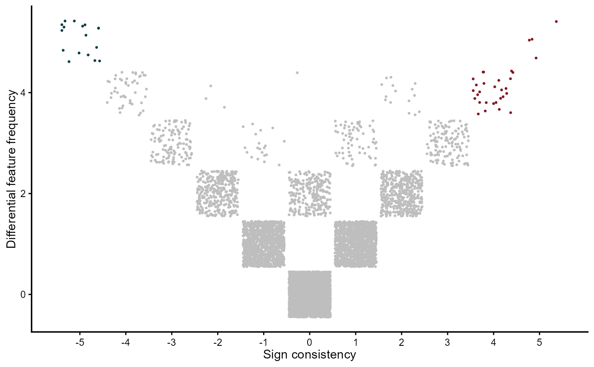

This function plots either the combining- or the vote-counting- MetaVolcanos
plot_mv(
meta_diffexp,
nstud,
genecol,
comb,
metafc,
colors = c("#083e46", "grey", "#811820"),
point_size = 0.5,
label_genes = NULL,
label_top_n = NULL,
label_size = 3,
plot_title = NULL,
show_legend = FALSE
)data.frame/data.table containing the differential expression inputs
the number of differential expression inputs <integer>
column name of the variable to label genes in the .html file <string>
wheather or not the drawing is for the combining-metavolcano <logical>
method for summarizing gene fold-changes across studies c("Mean", "Median") <string>
vector of colors for the plot
size of the points
character vector of specific genes to label
number of top genes to label
size of gene labels
custom plot title
whether to show the legend
ggplot2 object
data(diffexplist)
mv <- votecount_mv(diffexplist)
gg <- plot_mv(mv@metaresult, length(diffexplist), "Symbol", FALSE, "Mean")
plot(gg)
